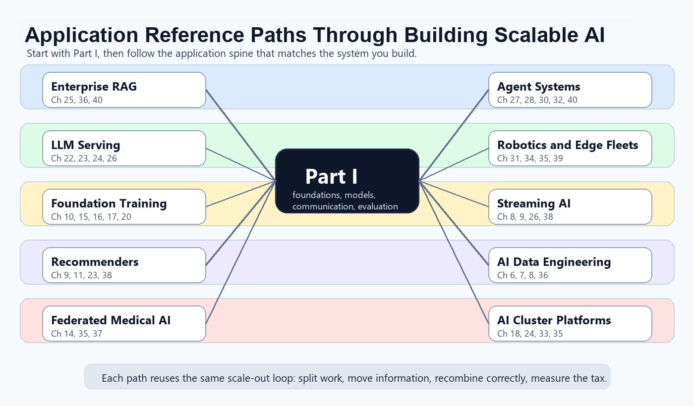

"I spent years learning to be a fast model on a fast machine. Then I met the dataset, the deadline, and nine thousand of my closest colleagues, and discovered that the real skill was learning to agree with all of them at once."
A Worker Reading Its Own Onboarding Documents
This book teaches one idea from forty-one angles: modern AI at scale is not model design on a single computer, it is the engineering of intelligent systems whose data, computation, models, inference, and decision-making are distributed across many machines that must communicate and coordinate to act as one. A single accelerator can hold only so many parameters, read only so many bytes per second, and answer only so many requests per second. Once any of those ceilings binds, the only way forward is to split the work across more machines and pay the price of moving information between them. Everything in these eight parts, from the MapReduce shuffle to multi-agent orchestration, is a variation on a single move: split the work, move the necessary data, recombine it correctly, and keep the cost of that movement under control. This preface tells you what the book claims, how it is arranged, and how to navigate it as a reader, a student, or an instructor.
This is a graduate-level book for students and engineers who already know how to build a model on one machine and now need to make it run across many. It assumes Python, a working knowledge of machine learning and deep learning, the usual data structures and algorithms, and the linear algebra and probability that Appendix A refreshes. It does not assume prior distributed-systems experience; the distributed-systems vocabulary you need is built up from first principles in Chapter 2. The eight sections of this preface, numbered 0.1 through 0.8 to match the front-matter plan, set the thesis, draw the central scale-out versus scale-up distinction, lay out the organization, render the dependency graph, give five semester course paths, describe the software environment and companion cluster lab, fix the notation, and point instructors to their resources.
0.1 Why Scale Out AI? Beginner
For most of its history a machine learning system was a single process on a single computer: you loaded a dataset into memory, fit a model, and served predictions from the same box. That picture is still where every practitioner starts, and it is still correct for a great deal of useful work. What changed is the scale of the inputs and the models. Datasets outgrew the memory, then the disk, of one machine. Foundation models outgrew the memory of one accelerator. Request volumes outgrew the throughput of one server. And the most capable systems no longer reason as a single program at all; they coordinate many agents, each running somewhere different. Each of these pressures, hit independently, forces the same move: stop trying to do everything on one machine, and distribute the work across many. The discipline of doing that move well, for artificial intelligence specifically, is what this book calls scale-out AI.
Four kinds of scale push AI off a single machine, and they are worth keeping separate because each calls for a different response. Data scale: a web-scale text or video corpus is measured in terabytes or petabytes, exceeding the storage and the processing throughput of one node, so the data and its processing must be partitioned. Model scale: a modern foundation model has billions or trillions of parameters, and the parameters plus optimizer state plus activations needed to train them exceed the memory of a single accelerator, so the model itself must be split across devices. Throughput scale: a deployed service may need to answer thousands of requests per second under a strict latency budget that no one server can meet, so inference must be replicated and coordinated across a fleet. Agent scale: an intelligent system may be a population of interacting agents, robots in a swarm, learners in a tournament, language-model agents passing tasks to one another, whose intelligence is itself distributed by design. A recommendation system might feel only data and throughput pressure; a large language model feels all four at once.
The numbers make the point sharper than prose. If a corpus holds $N$ examples and one machine processes them at a fixed rate, wall-clock time grows linearly in $N$ while a single disk and a single network card stay fixed; past some $N$ the job simply does not finish inside the window you have. If a model holds $P$ parameters in mixed precision, training memory scales with $P$ for weights plus a multiple of $P$ for optimizer state and gradients, and crosses the memory ceiling of one device at a $P$ smaller than today's frontier models by orders of magnitude. Distribution is the response to those ceilings, and it is not chosen for elegance; it is forced by a resource that ran out.
You distribute an AI workload because a specific resource ran out: memory to hold the data, memory to hold the model, throughput to serve the requests, or the sheer number of agents that must act at once. Each ceiling has its own remedy, partition the data, shard the model, replicate the service, coordinate the agents, and the remedies compose. The whole book is the catalogue of those remedies and, just as importantly, of the communication tax each one charges. Recognizing which ceiling actually binds, and resisting the urge to distribute when none of them do, is the first skill scale-out AI teaches.
Section 1.1 opens the book proper with the single most reassuring fact about this move: for the central case of training by gradient descent, splitting the work across machines is exact, not approximate. The gradient of an average loss decomposes term by term, so $K$ workers each blind to most of the data can jointly compute the identical gradient a single machine would have produced. That exactness is the seed from which every parallel-training method in Parts III and IV grows.
0.2 Scale-Out vs Scale-Up (and Why This Book Chooses Scale-Out) Beginner
To scale up is to make one machine more capable: a bigger accelerator, more memory, a faster interconnect inside the box. To scale out is to add more machines and divide the work among them. The two are not rivals, and real systems do both, scaling each node up to a sensible point and then scaling out across many such nodes. This book leads with scale-out, because that is where the distinctive algorithms, system designs, and failure modes of AI at scale live: collective communication, partitioning and replication, parameter servers, sharded and expert parallelism, elastic and fault-tolerant training, distributed serving fleets, and multi-agent coordination. Scale-up techniques, quantization, KV-cache paging, FlashAttention, continuous batching, speculative decoding, matter, but they are the unit economics of one node, and a distributed fleet simply multiplies whatever one node does.
Because of that, this book treats single-node efficiency as a clearly labeled per-node prerequisite rather than a subject in its own right. It is collected in Chapter 22, "Per-Node Inference Efficiency," whose explicit job is to establish the cost of one machine so that Chapter 23 and Chapter 24 can size and cost a fleet on top of it. You will see a handful of other per-node enabler sections (mixed precision in Chapter 15, activation checkpointing in Chapter 16), and each is labeled as such; none is ever the main event of a chapter. The editorial contract is simple: borrowed material from high-performance computing, distributed systems, and web serving (all-reduce, consensus, load balancing) is welcome, but every primitive is introduced through the AI operation that uses it, and is scoped accurately when AI relies on less of it than classical HPC does.
Scaling out AI is the study and engineering of intelligent systems whose data, computation, models, inference, and decision-making are distributed across many interacting machines. Single-node efficiency matters only as the per-node baseline that distribution multiplies. Every chapter advances this single spine from a different angle, and wherever a chapter pushes the spine forward you will find a thesis-thread callout like this one marking the spot. If you remember one thing from this preface, remember this sentence; the forty-one chapters are its proof.
The thesis also explains an organizing device you will meet on every page: the six axes of distribution. Data parallelism distributes one thing, the training computation, along one axis. A full AI system can be distributed along several axes at once, and naming them gives the map for the entire book. The six are: distribute the data, distribute the training, distribute the model, distribute the inference, coordinate the cluster, and distribute the intelligence. Section 1.2 walks all six with a worked example each; Table 0.1 in the next section binds each axis to the part of the book that develops it.
0.3 How This Book Is Organized Beginner
The book has eight parts and forty-one chapters, plus four appendices. The arc moves from foundations, through the data and training layers, into parallel deep learning and large models, out to inference and serving, across to multi-agent intelligence, down to the cluster and edge infrastructure that carries all of it, and finally into case studies and a capstone that pull from everything. The six axes of distribution are the spine: each part owns one or two axes, and Table 0.1 makes that ownership explicit so you can read any later chapter as a deep treatment of one cell of a single map.
| Part | Chapters | What it covers | Primary axis |
|---|---|---|---|
| I. Foundations of Distributed AI | 1–5 | Distribution axes, distributed-systems concepts, performance models, communication primitives, evaluation | Coordinate the cluster |
| II. Distributed Data Processing for AI | 6–9 | MapReduce, Spark and DataFrames, distributed storage and data loading, stream processing | Distribute data |
| III. Distributed Machine Learning | 10–14 | Distributed optimization, parameter servers, classical ML, graph ML, federated learning | Distribute training |
| IV. Parallel Deep Learning and Large Models | 15–21 | Data/model/sharded/expert parallelism, elastic training, foundation models, distributed RL, HPO | Distribute the model |
| V. Distributed Inference and Serving | 22–26 | Per-node efficiency prerequisite, distributed inference, LLM serving, retrieval, fleet MLOps | Distribute inference |
| VI. Distributed AI and Multi-Agent Systems | 27–32 | DAI, game theory, multi-agent systems, MARL, swarms, agent orchestration | Distribute intelligence |
| VII. Cluster, Edge, and Reliable Infrastructure | 33–35 | Cluster scheduling, edge and fog, reliable and secure distributed AI | Coordinate the cluster |
| VIII. Case Studies and Capstone Projects | 36–41 | Web-scale RAG, federated medical AI, recommendation, robotics swarms, agentic apps, capstone | All six, composed |
A recurring narrative thread runs the length of the book, and it is worth watching for. The communication primitives introduced in Chapter 4 return as the engine of every parallel method. The MapReduce shuffle of Chapter 6 returns as all-reduce in Chapter 15. The parameter-server sharding of Chapter 11 returns as ZeRO and FSDP in Chapter 16. Data parallelism returns as expert parallelism in Chapter 17. The per-node KV-cache economics of Chapter 22 return multiplied across the serving fleet in Chapter 24. When a primitive reappears scaled out, a looking-back callout names where you first met it.
Within a chapter the structure is consistent: motivation (why this work must be distributed), core concepts, the distribution and communication pattern, a minimal from-scratch implementation, the same task solved in a few lines with a production library, failure modes and fault tolerance, evaluation in terms of speedup and efficiency and cost, and research directions. Each chapter index opens with an epigraph, states its prerequisites in prose, and ends with a "What's Next" section before its annotated bibliography. The four appendices carry the supporting material: Appendix A (mathematical background), Appendix B (the companion cluster lab), Appendix C (notation and glossary), and Appendix D (datasets and benchmarks).
0.4 The Chapter Dependency Graph Intermediate
The parts are not a strict linear chain. Part I underpins everything and should be read first by everyone. After that the graph branches: the data layer (Part II), the training layer (Part III), and the parallel-deep-learning layer (Part IV) feed forward into distributed inference and serving (Part V); the multi-agent material (Part VI) is largely independent after Part I and can be taught standalone; the infrastructure of Part VII supports all parts; and the case studies of Part VIII pull from everywhere. Figure 0.1 renders the part-level graph; the arrows mean "recommended before," not "strictly required."
A few chapter-level cross-links carry most of the book's connective weight, and it helps to know them before you start. Chapter 4 (collective communication) underpins Chapter 10, Chapter 15, Chapter 16, and Chapter 17; read it before any parallel-training chapter. Chapter 22 (per-node efficiency) is a prerequisite for Chapter 23 and Chapter 24. Chapter 30 (MARL) builds on Chapter 20 (distributed RL infrastructure), Chapter 28 (game theory), and Chapter 29 (multi-agent systems). Chapter 32 (agent orchestration) builds on Chapter 24 (LLM serving) and Chapter 25 (retrieval). If you read only Part I and then jump to a chapter that interests you, these are the links to honor.
0.5 How to Use This Book in a Course Intermediate
The book can also be read as a reference for application builders. In that mode, start with Part I, then follow the application path whose system you are building. Figure 0.2 gives the map at a glance, and Table 0.2 names the ten common paths and points to the chapters that carry the design load. The table is deliberately application-oriented: it tells a RAG engineer, a cluster-platform engineer, or a multi-agent researcher where the book becomes their main reference rather than a general background text.

| Application | Main reference chapters | What the path teaches |
|---|---|---|
| Enterprise RAG and knowledge assistants | 25, 36, 40 | Distributed retrieval, reranking, GraphRAG-style structure, freshness, governance, and agentic retrieval loops. |
| Distributed LLM serving platforms | 22, 23, 24, 26 | KV-cache economics, batching, prefill and decode scheduling, routing, SLOs, and fleet MLOps. |
| Foundation-model training infrastructure | 10, 15, 16, 17, 20 | All-reduce, sharding, FP8-era precision, MoE routing, fault tolerance, and rollout-heavy post-training. |
| Large-scale recommendation systems | 11, 9, 23, 38 | Embedding tables, online features, retrieval and ranking services, feedback loops, and generative recommender transitions. |
| Federated medical and regulated AI | 14, 35, 37 | FedAvg, non-IID data, secure aggregation, privacy attacks, regulatory deployment, and federated foundation-model tuning. |
| Autonomous multi-agent systems | 27, 28, 30, 32, 40 | Coordination, incentives, MARL, context engineering, tool protocols, and multi-agent failure modes. |
| Robotics, swarms, and edge AI fleets | 31, 34, 35, 39 | Local coordination, edge deployment, sensing, reliability, safety, and foundation-model robots under latency limits. |
| Real-time streaming AI | 8, 9, 26, 38 | Event time, windows, online features, drift, delayed labels, and train-serve consistency. |
| AI data engineering and multimodal pipelines | 6, 7, 8, 36 | Distributed cleaning, deduplication, multimodal preprocessing, embedding generation, and corpus governance. |
| AI cluster platforms and internal AI clouds | 33, 35, 18, 24 | GPU scheduling, gang placement, DRA-style accelerator allocation, confidential computing, and production reliability. |
These paths are not shortcuts around the foundations. They are ways to aim the same foundations at a concrete system. A production RAG system still needs the latency and cost vocabulary of Chapter 5; a robotics fleet still needs the failure vocabulary of Chapter 2; and an internal AI cloud still needs the communication models of Chapter 4. The path tells you where to spend most of your time after Part I.
The book is larger than any single reading track, by design: it supports five distinct graduate courses that share Part I and then diverge. Each course path maps to a thirteen-to-fifteen week semester and ends in the Chapter 41 capstone, where students design, build, and evaluate a distributed AI system of their own and defend its distribution axis, speedup, scaling efficiency, and cost.
The five paths are:
- Big Data Algorithms for AI
- Distributed Machine Learning
- Parallel Deep Learning Systems
- Distributed AI and Multi-Agent Systems
- Distributed AI Infrastructure
Table 0.3 gives one path in full as a worked example; the complete week-by-week maps for all five live in the plan that accompanies this book and in the instructor materials of Section 0.8.
| Weeks | Chapters | Focus |
|---|---|---|
| W1–2 | 1, 2, 3 | Scale-out thesis, distributed-systems concepts, performance models |
| W3 | 4, 5 | Communication primitives and evaluation discipline |
| W4–7 | 6, 7, 8, 9 | MapReduce, Spark, distributed storage and loading, stream processing |
| W8–9 | 12, 13 | Distributed classical ML and distributed graph ML |
| W10–11 | 25 | Distributed retrieval and vector search |
| W12 | 36 | Case study: web-scale text processing and distributed RAG |
| W13–15 | 41 | Capstone project |
The other four paths reweight the same material. Distributed Machine Learning spends its middle weeks in Part III and the parallel-training chapters of Part IV (10 through 21). Parallel Deep Learning Systems concentrates on Chapters 15 through 26, the training-and-serving spine. Distributed AI and Multi-Agent Systems runs through Part VI with a detour into the distributed-RL infrastructure of Chapter 20 and the robotics case study of Chapter 39. Distributed AI Infrastructure threads storage, streaming, elastic training, serving, scheduling, edge, and reliability (Chapters 8, 9, 18, 23 through 26, 33 through 35). All five share the Part I foundation and all five terminate in the capstone, so an instructor can mix and match chapters with confidence that the dependency graph of Section 0.4 is respected.
Who: An instructor planning a new graduate elective on distributed machine learning for a fifteen-week term.
Situation: The catalogue listed a single forty-one-chapter book and a cohort that had taken machine learning but no distributed systems.
Problem: Covering all eight parts in one term would mean covering none of them well, and the students lacked the systems background to start anywhere but the beginning.
Decision: The instructor adopted Course Path 2, fixing Part I as a non-negotiable four-week foundation and then committing the rest of the term to Parts III and IV.
How: Weeks 1 to 2 took Chapters 1 to 4; weeks 3 to 6 took the distributed-ML chapters 10 to 14; weeks 7 to 11 took the parallel-deep-learning chapters 15 to 19; week 12 sampled distributed RL infrastructure and HPO; and the final three weeks ran the Chapter 41 capstone with the distributed-training benchmark project.
Result: Students who could only train on one GPU in week 1 were profiling a sharded FSDP run against a DDP baseline by week 11, and every capstone defended a measured speedup-versus-cost curve.
Lesson: Treat Part I as the shared trunk, pick one path through the branches, and let the capstone force students to measure rather than assert.
0.6 Software Environment and the Companion Cluster Lab Beginner
Every concept in this book is taught twice: once from scratch, so you understand the mechanism, and once with the production tool that does it for you in a few lines, so you understand what real systems lean on. The from-scratch versions use Python and NumPy. The tool versions draw on a modern, open ecosystem: PyTorch with its distributed package (DDP and FSDP) and TorchElastic for parallel training; DeepSpeed, Megatron-LM, and Horovod for large-model and sharded training; Spark and PySpark, Kafka, and Flink for distributed data and streaming; Ray (Train, Tune, RLlib, Serve) for distributed Python; vLLM, TensorRT-LLM, and SGLang for distributed inference; FAISS and vector databases for retrieval; and NCCL, Gloo, Kubernetes, and Slurm underneath. Wherever a from-scratch implementation has a production equivalent, a library-shortcut callout shows the same task in a handful of lines and names exactly what the library handles internally, such as process-group setup, gradient bucketing, sharding, or all-reduce scheduling.
The demos are meant to run, not just to read. The companion cluster lab in Appendix B shows how to reproduce every distributed example at four scales, from a single laptop upward: a local multi-process setup that simulates a cluster on one machine, a single-GPU and multi-GPU setup, a true multi-node setup with NCCL and torchrun and Slurm, and a cloud and spot-instance setup for the experiments that need more hardware than you own. You do not need a real cluster to start; the local multi-process mode lets you exercise collectives, parameter servers, and elastic training on a laptop, then scale the identical code out when hardware is available. The reproducibility ethos is non-negotiable throughout: every measured claim in the book corresponds to a runnable configuration, and Appendix B closes with a reproducibility checklist that the Chapter 41 capstone asks students to satisfy.
0.7 Notation and Conventions Beginner
The book uses a small, consistent set of symbols for the quantities that recur in every scaling argument. Table 0.4 lists the core notation; Appendix C carries the complete table and a glossary of every distributed-systems term. Holding these five symbols in mind makes the cost models of Chapter 3 and the parallel-training chapters readable at a glance.
| Symbol | Meaning |
|---|---|
| $N$ | Number of training examples (data size) |
| $K$ | Number of workers or devices participating in a distributed job |
| $P$ | Number of model parameters |
| $B$ | Global batch size summed across all workers |
| $b$ | Per-worker (local) batch size, so $B = K \, b$ under data parallelism |
Two writing conventions are worth stating once. As a verb, "scale out" is two words ("we scale out the training across eight nodes"); as an adjective or noun it is hyphenated ("a scale-out architecture," "the scale-out tax"). The same holds for "scale up" versus "scale-up." The book also fixes a small vocabulary of roles and operations that you will see on nearly every page: a worker is a process that does a share of the computation; a coordinator is the process (when there is one) that assigns work and collects results; a shard is a disjoint piece of data, parameters, or an index assigned to one worker; a replica is a full copy of a model or service running on its own machine; a collective is a communication operation that all workers in a group participate in together; and all-reduce is the most important collective, which sums one vector held on each worker and returns the sum to all of them. These terms are defined where they first appear and collected in Appendix C; when in doubt, that glossary is the authority.
0.8 Instructor Resources Beginner
The book ships with a companion set of teaching materials aimed at the five course paths of Section 0.5. These include per-chapter lecture slides, a solutions manual for the conceptual, coding, and analysis exercises that close every section, cluster-ready starter-code repositories for each capstone project option, and reproducible lab environments built on Docker with Slurm and Kubernetes templates plus cloud configurations. Sample syllabi instantiate each of the five paths week by week, and auto-graded assignment harnesses are provided where a distributed result can be checked mechanically (for example, that a sharded gradient matches its single-machine reference, the exact property proved in Section 1.1).
The capstone in Chapter 41 carries its own rubric, and it is the assessment backbone of every course path. It asks students to choose a distributed AI problem, name the distribution axis, build a single-machine baseline, design and implement the distributed version, select the tools and infrastructure, evaluate with speedup, scaling efficiency, and cost, and ship a reproducibility package and a final report. The exercises throughout the book are designed to feed that capstone, and the experiment-reproducibility packages from the chapters double as worked references for it. These materials will grow alongside the book; the canonical list and the latest versions are maintained with the instructor edition.
The thesis is set, the map is drawn, and the conventions are fixed. The book proper begins by proving its central promise rather than merely asserting it. Chapter 1 opens with the one short calculation that shows distributed training can be exact rather than approximate, then turns that single example into the six axes of distribution that organize everything to follow. Read Part I first, then take the branch of the dependency graph in Figure 0.1 that matches your course or your curiosity. Turn to Section 1.1 to see one machine stop being enough, and to watch eight workers compute the identical gradient that one machine would have.